Spark History Server: rebuilding an application view from files
component index
The History Server is an optional, separate JVM service for many Spark applications. It can run before, during or after any particular YARN application. It does not receive executor heartbeats, contact a dead driver for its status store, restart jobs, or serve as the YARN ResourceManager. Its input is the driver's event log; its output is an application/attempt listing and reconstructed web and REST views.
Flow at a glance
- Log scan: The server scans the shared log directory and lists attempts from application events.
- Attempt lookup: On a cache miss, the provider reuses a saved store or rebuilds one by replaying the attempt's log.
- History page: The server reads that attempt's store to show recorded stages and tasks without a running driver.
Watch for: An attempt can still appear in progress if the driver died before writing the application-end event.
Show the animated flow

Who starts it and what it needs
A cluster operator or service manager starts and stops the daemon, not spark-submit, SparkContext or the AM. Spark provides start-history-server.sh and stop-history-server.sh. HistoryServer.main creates the configured ApplicationHistoryProvider, binds the web server (default spark.history.ui.port=18080), starts the provider and installs a shutdown hook. HistoryServer.stop() stops the web server and provider; the filesystem provider stops its workers and closes stores.
The usual FsHistoryProvider needs read access to the same underlying filesystem location the driver wrote to: set the application's spark.eventLog.dir and the server's spark.history.fs.logDirectory accordingly. The server does not enable event logging for applications. It has two different jobs:
| Path |
Input, state and output |
| Discover attempts |
The provider periodically scans accessible log roots. EventLogFileReader recognizes a single log or a rolling directory; the provider tracks file size, segment index and completion state to decide what changed. A listing replay filters for log start, application start/end and environment records. It indexes app and attempt metadata rather than building a task table for every app. |
| Open one attempt |
A browser request under /history/<appId>/<attemptId>/ or an API lookup goes through the application cache. On a miss, the provider selects the recorded attempt, tries a valid local disk store if configured, otherwise builds the needed store from the log. A bounded cache keyed by app and optional attempt ID reuses attached UIs. Eviction detaches handlers; it is not deletion of the event log. |
How replay constructs a UI without a driver
Sequence diagram · Open full sizeText equivalent
sequenceDiagram
participant C as Attempt cache
participant F as FsHistoryProvider
participant L as Event log files
participant R as ReplayListenerBus
participant K as Per-attempt status store
C->>F: Load app and attempt
Note over F,K: On a store miss
F->>L: Open ordered segments and decompress if necessary
L-->>R: One JSON event per line
R->>K: Invoke replay status listeners to update records
F->>K: Flush replay state for reads
F-->>C: SparkUI with this store and no SparkContext
C->>C: Attach handlers under the history serverrebuildAppStore creates ReplayListenerBus, an AppStatusListener(live=false, lastUpdateTime=...) and any plugin listeners. It reads ordered segments; replay decodes each accepted line with JsonProtocol and dispatches it synchronously. There is no live scheduler callback and no live async queue. Closing the tracking wrapper flushes pending state without closing the underlying store. The provider constructs SparkUI with None instead of a SparkContext; the history server attaches its handlers to the existing HTTP server. For SQL, the history plugin installs a replay listener and adds a SQL tab if it found executions. Similar screens to the live UI do not imply identical evidence or working job controls.
Worked example: an application listed as incomplete
Suppose the orders driver flushed a stage-completed record and then its container was killed before writing application end or finalizing the log. On a later scan the listing can show the app as in progress. Opening that attempt can show the completed stage and the tasks whose records survived; it cannot establish that the Parquet write committed or that the driver is still alive. Check the YARN attempt diagnostics and the output commit evidence for those questions. If a running writer instead finalizes the log later, a scan can invalidate the stale UI; a subsequent load can reflect the new records.
Diagnosing missing history: an empty listing calls for checking log location, permissions, scan interval and whether the driver wrote application start; a listed attempt whose first detail page is slow may simply be replaying a cold log. A partial final JSON line in a possibly truncated log can be tolerated; malformed JSON midstream raises an error, while unknown event classes are skipped with warnings. A fresh replay cannot recover events dropped before write, unlogged stdout/stderr or records removed by optional rolling-log compaction or the filesystem cleaner. The cache is not an archive.